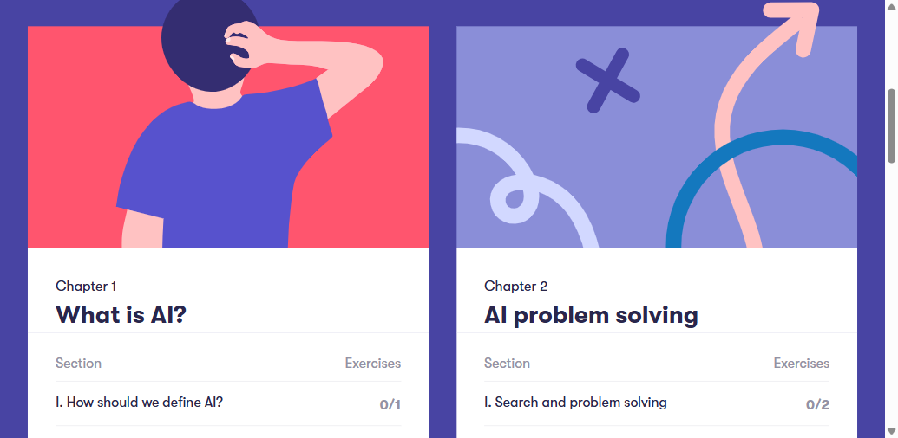
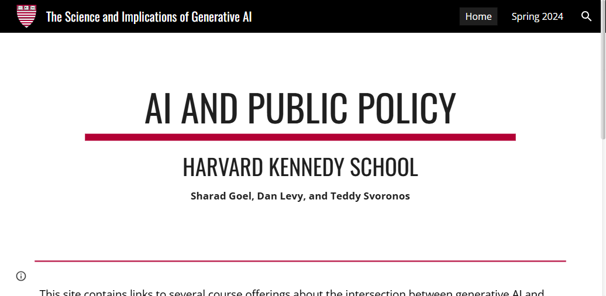

La IA hoy
¿Qué es (y qué no es) la Inteligencia Artificial?
Constantemente llamamos "IA" a cosas que no lo son. Un sistema informático cruza la línea hacia la Inteligencia Artificial cuando tiene dos capacidades:
1. Autonomía
Hace tareas en entornos complejos sin que una persona le haya programado una lista de reglas rígidas del tipo "si pasa X, hacé Y".
2. Adaptabilidad
Mejora su rendimiento a medida que ve más datos ("experiencia"). Ajusta su matemática interna para cometer menos errores.
Definición basada en el curso Elements of AI (Universidad de Helsinki).
❌ Lo que NO es IA
Sistemas estáticos. Si cambian las condiciones, el programa se rompe o no sabe reaccionar.
- Una planilla de cálculo (Excel): calcula fórmulas complejísimas en milisegundos, pero solo hace exactamente la fórmula que escribiste. No aprende.
- Un buscador de texto (Ctrl+F): encuentra exactamente lo que escribiste. Si tenés un error de tipeo, no encuentra nada. No interpreta.
- Un termostato programado: prende la calefacción si la temperatura baja de 20 °C. Nunca aprende que preferís 18 °C los fines de semana.
- Almacenamiento en la nube (Dropbox/Drive): guarda y recupera archivos con precisión perfecta, pero no aprende ni se adapta.
✅ Lo que SÍ es IA
Sistemas dinámicos. Encuentran patrones por su cuenta y cambian su comportamiento cuando reciben información nueva.
- Filtro de correo spam: aprende qué es "basura" observando los correos que marcás como tal. Nadie le programó una lista infinita de palabras prohibidas.
- Recomendación de rutas (Google Maps): evalúa tráfico, accidentes y cortes en tiempo real para sugerirte la ruta más rápida, y mejora sus predicciones con los viajes registrados.
- Recomendación musical (Spotify): compara tus gustos con los de millones de personas y descubre patrones que nadie le programó.
- Detección de fraude bancario: aprende tus patrones normales de gasto. Si de repente aparece una compra muy distinta, la frena preventivamente.
¿Y ChatGPT o Claude aprenden de mí mientras los uso?
No, no en el sentido que parece. El modelo aprende durante su entrenamiento, que ocurre antes de que lo uses. Mientras conversás, el modelo está "congelado": no cambia por lo que le decís. Cuando una app "se acuerda" de vos, es porque guardó notas y se las vuelve a pasar como texto al principio de cada conversación. Lo vemos en detalle en el .
El colapso del costo: por qué ahora
La teoría de la IA existe desde los años 50. Lo que cambió en la última década es que tres cosas se juntaron: hardware capaz de hacer cálculos masivos en paralelo, una nueva arquitectura (el Transformer) y una cantidad de texto digital sin precedentes. El resultado: usar IA avanzada pasó a costar una fracción de lo que costaba hace pocos años.
Los 3 catalizadores del cambio
1. El hardware
Las GPU, diseñadas para videojuegos, resultaron ideales para la IA porque hacen miles de cálculos simples a la vez.
2. Los Transformers (2017)
Investigadores de Google publican "Attention Is All You Need". Su aporte clave: procesar todas las palabras de un texto en paralelo en lugar de una por una. Eso permitió entrenar modelos mucho más grandes y escalar a cientos de miles de millones de parámetros (o más). Es el motor de todos los modelos de lenguaje actuales.
3. Internet como corpus
Décadas de libros, artículos, código y conversaciones digitalizados se convirtieron en el material de entrenamiento más grande de la historia. Accesible, pero no gratis ni libre de conflictos: el uso de obras protegidas para entrenar modelos está en tribunales. En julio de 2026 se aprobó el mayor acuerdo por derechos de autor de la historia (USD 1.500 millones, unos USD 3.000 por libro) entre autores y Anthropic por el uso de libros pirateados.
Fuente: Jurist, julio de 2026
Precio de usar un modelo de nivel GPT-3.5
USD por millón de tokens, escala logarítmica. Mide el precio de alcanzar un nivel fijo de capacidad, no el precio de un producto específico.
Fuente: Stanford AI Index 2025 (datos de Epoch AI y Artificial Analysis).
Que la IA sea barata y esté al alcance de todos no la hace infalible. Lo que marca la diferencia es para qué la usás, con qué información y quién revisa el resultado.
¿Qué significa esto para vos?
En tu día a día
Las tareas de texto (redactar, resumir, ordenar ideas, traducir) ya se pueden delegar en borrador. Vos seguís siendo quien revisa y firma.
En tu trabajo con datos
Analizar un Excel o un PDF es posible, pero el modelo no "mira" el archivo como vos: la app lo convierte en texto o corre código. Entender eso (Capítulo 4) te dice cuándo confiar en el resultado.
En tu criterio
La pregunta útil no es "¿uso IA?" sino "¿para qué tarea concreta, con qué datos y quién revisa el resultado?"
¿Pero cómo llegamos hasta acá? La historia de la IA no es una línea recta de éxitos: es una sucesión de promesas, decepciones y avances que pocos anticiparon. En el hacemos ese recorrido.
Historia y evolución de la IA
Elegí un hito de la línea de tiempo para ver qué pasó y qué nos deja para hoy.
Tres lecciones que no caducan
El ciclo se repite
Entusiasmo → inversión masiva → promesas incumplidas → invierno → avance silencioso. Reconocerlo es una forma de leer las noticias con criterio.
La ciencia sobrevive al mercado
Durante los inviernos de la IA, el capital se retiró pero los investigadores siguieron publicando. Los avances de hoy son la acumulación silenciosa de décadas de trabajo con poco financiamiento.
Estamos dentro de un ciclo
El ciclo actual se aceleró con los Transformers (2017) y explotó con ChatGPT (2022). Todavía está en curso: conviene mirarlo con la perspectiva de los ciclos anteriores.
Ya sabés de dónde viene. Ahora, ¿cómo funciona por dentro? En el abrimos el cerebro de un modelo de lenguaje.
El cerebro: cómo funciona un modelo de lenguaje
Las Muñecas Rusas de la Tecnología
La Inteligencia Artificial no flota en el vacío. Para entenderla, conviene abrir las muñecas rusas (matrioshkas) desde la ciencia base que hace todo esto posible, hasta llegar a la vanguardia actual.
El universo general. Acá están la programación, las bases de datos y la arquitectura de hardware. Es el "lienzo" sobre el que se pinta todo lo demás.
El motor lógico. Antes de la IA moderna, ya usábamos la matemática para calcular "qué es más probable que ocurra".
Nace al aplicar computación para imitar raciocinio. Inicialmente era rígida, dependiendo de reglas programadas a mano.
El gran salto. Le damos estadística y datos a la máquina para que infiera patrones por sí sola, sin programarle reglas explícitas.
Usa Redes Neuronales de múltiples capas para asimilar abstracciones complejas (como visión artificial).
El Machine Learning: La base de toda IA
Todo lo que hoy llamamos "Inteligencia Artificial" es, en su raíz, Machine Learning: sistemas que aprenden patrones a partir de datos en lugar de seguir reglas programadas a mano. La IA generativa —ChatGPT, Claude, Gemini— no es una tecnología aparte: es la expresión más visible y accesible de esta misma base. Entender cómo aprenden las máquinas es entender por qué la IA generativa funciona como funciona.
Cómo se entrena un asistente como ChatGPT o Claude: 3 etapas
-
1
Pre-entrenamiento (auto-supervisado). El modelo lee una cantidad enorme de texto y aprende a predecir la palabra que sigue. Resultado: un modelo que sabe mucho y escribe bien, pero que no conversa: si le escribís una pregunta, puede seguir escribiendo más preguntas.
-
2
Ajuste por instrucciones (supervisado). Se lo entrena con miles de ejemplos de conversaciones "pregunta → buena respuesta" escritas o revisadas por personas. Aprende el formato de asistente.
-
3
Aprendizaje por refuerzo. Se lo premia por las respuestas que se prefieren. Puede ser con feedback humano (RLHF), con criterios escritos que evalúa otra IA, o —en los modelos de razonamiento— con recompensas automáticas en problemas que se pueden verificar (matemática, código). Esta etapa le da el estilo útil, prudente y, en los modelos más nuevos, la capacidad de "pensar" antes de responder.
Modelos Fundacionales: El Gran Cambio de Paradigma
La mayor ruptura conceptual de los últimos años no fue técnica. Fue de filosofía de ingeniería.
Cada uno entrenado por separado. No compartían nada. Si aparecía una tarea nueva, había que empezar de cero.
Un modelo fundacional es como alguien con una formación enciclopédica. Para que trabaje en tu empresa no hace falta volver a formarlo: alcanza con darle tus documentos e instrucciones cuando le pedís algo (eso es contexto, lo vemos en el Capítulo 4). Volver a entrenarlo (fine-tuning) es otra cosa, más cara, y casi nunca hace falta.
Los laboratorios no publican el tamaño de sus modelos más grandes. Fuentes: Google, OpenAI y Meta (publicaciones de cada modelo).
A esa escala, el modelo no solo repite: aprende patrones generales que le permiten responder cosas que nunca vio exactamente así. Pero también memoriza fragmentos, y a veces los mezcla mal.
Los Grandes Modelos de Lenguaje (LLMs) al desnudo
✂️ Laboratorio 1: La máquina no lee letras, lee "Tokens"
Antes de que la IA pueda procesar cualquier texto, este debe convertirse en números. Ese proceso se llama tokenización.
El proceso en 4 pasos
🔬 Probalo vos
Escribí cualquier texto y observá cómo se divide en tokens (bloques de color). Cada color = un token diferente = un número único para la IA.
* Esta demo usa tokenización simplificada por palabras. El modelo real usa Byte-Pair Encoding (BPE) que también subdivide palabras largas o poco comunes.
Probá "Electroencefalografista": un tokenizador real la parte en varios fragmentos, no en letras individuales. Por eso al modelo le resulta difícil decirte cuántas "a" tiene: nunca vio las letras, solo vio fragmentos. Hoy muchas apps resuelven esto haciendo que el modelo cuente con código (ver Capítulo 4).
🔬 Un tokenizador real (BPE), como los que usan los modelos de OpenAI
El demo de arriba simplifica la tokenización para facilitar la intuición. Esta herramienta usa un tokenizador real (BPE — Byte Pair Encoding), como los que usan los modelos de OpenAI: los resultados pueden diferir, especialmente en palabras compuestas, números y caracteres especiales. En el campo User → Content escribí una frase y observá cómo la divide en tokens.
🧠 Laboratorio 2: El Cerebro del Transformer en 3D
Un Transformer es una máquina que apila el mismo bloque de procesamiento decenas de veces. Cada bloque tiene exactamente cuatro etapas. Entenderlas es entender cómo funciona realmente la IA generativa:
Antes de procesar nada, cada token se convierte en un
vector: una lista de miles de números flotantes que representa su
"posición" en un espacio matemático de alta dimensión. En ese espacio, las palabras con
significados relacionados quedan físicamente cerca. El ejemplo clásico: Rey − Hombre + Mujer ≈ Reina. Para
la máquina, el significado es geometría: palabras parecidas quedan cerca.
📐 En el visualizador: cada token se estira verticalmente en una columna de números — eso es el vector embedding.
El núcleo del Transformer. Para cada token, el modelo genera tres vectores internos: Consulta (Q), Clave (K) y Valor (V). Luego calcula cuánta "atención" debe poner cada palabra en cada otra. En la frase "Fui al banco a depositar dinero", la palabra banco pondrá máxima atención en depositar y dinero — y así resolverá la ambigüedad. Este cálculo ocurre en paralelo para todos los tokens a la vez, con múltiples "cabezas" de atención capturando distintas relaciones simultáneamente (sintaxis, semántica, correferencia).
🔗 En el visualizador: las líneas verdes que conectan palabras son los pesos de atención calculados en tiempo real.
Después de la atención, cada token pasa individualmente por una red neuronal densa de dos capas (la red feedforward). Una de las hipótesis de los investigadores es que acá se guarda buena parte del conocimiento factual: hechos, relaciones, datos del mundo. Un modelo grande apila decenas de estos bloques (GPT-3 tenía 96): en general, las primeras capas capturan rasgos más simples y las siguientes, relaciones más abstractas.
🧱 Es el componente más "pesado" del modelo: representa la mayor parte de los parámetros totales.
La capa final proyecta el vector resultante sobre todo su vocabulario de tokens (en los modelos actuales, de decenas de miles a más de 200.000 tokens) y asigna a cada uno una probabilidad. El modelo no siempre elige la de mayor probabilidad: un parámetro llamado temperatura controla la "creatividad". Temperatura baja → respuestas conservadoras y predecibles. Temperatura alta → mayor variedad, más riesgo de error. Luego el token elegido se agrega al texto y el proceso se repite: así, de un token por vez, emerge la respuesta.
🎲 En el visualizador: la columna final muestra esas probabilidades. El modelo "lanza un dado ponderado" en cada paso.
Recursos para quienes quieren ir más lejos.
Del Transformer al LLM: Cómo se genera el texto
Entender la arquitectura Transformer es el primer paso. El segundo es entender qué ocurre cuando ese mecanismo se aplica a miles de millones de parámetros y billones de tokens, y cómo produce texto coherente.
La diferencia es la escala
Un Transformer pequeño puede tener millones de parámetros. Un LLM moderno va desde unos pocos miles de millones hasta cientos de miles de millones de parámetros (o más; los más grandes no publican su tamaño). Con la escala aparecen capacidades que los modelos chicos no tienen: traducir, programar, resolver problemas en varios pasos.
Entrenado en texto de internet
Durante el pre-entrenamiento, el modelo lee billones de tokens: libros, artículos, código, conversaciones. La tarea es simple: predecir la palabra siguiente. Repetir esa tarea una cantidad enorme de veces lo obliga a internalizar gramática, hechos, lógica y relaciones entre conceptos, sin etiquetas humanas.
Ajustado para ser útil
Un modelo pre-entrenado solo continúa texto: no "ayuda". Para convertirlo en asistente se lo entrena con conversaciones de ejemplo escritas por personas (ajuste por instrucciones) y después se lo premia por las respuestas preferidas (aprendizaje por refuerzo). Así nacen apps como ChatGPT, Claude o Gemini.
¿Cómo genera el texto, exactamente? — El bucle autorregresivo
El LLM no genera una respuesta completa de golpe. La construye una pieza a la vez, en un bucle que se repite cientos o miles de veces:
Una respuesta de 300 palabras implica unas 400 repeticiones de este bucle (estimación: depende del idioma y del tokenizador). En cada paso, el modelo vuelve a tener en cuenta todo el texto anterior para decidir el próximo token.
📋 La ventana de contexto
El modelo solo "ve" el texto que entra en su ventana de contexto. En 2026, los modelos de punta aceptan del orden de 1 millón de tokens, pero aceptar no es aprovechar: está documentado que a los modelos les cuesta usar información que queda "perdida en el medio" de textos muy largos (Liu et al., 2023) y que su precisión baja mucho antes del límite nominal.
Implicación práctica: en conversaciones muy largas, la app recorta o resume lo viejo para que entre. Por eso el modelo puede "olvidar" detalles del principio. No es mala memoria: es que ese texto ya no está en lo que recibe. Para temas nuevos, conviene abrir un chat nuevo.
⚠️ Lo que el LLM realmente hace
El mecanismo es simple de describir: en cada paso, el modelo calcula probabilidades para el próximo token y elige uno (no siempre el más probable: eso depende de la temperatura). Lo sorprendente es lo que emerge de ese mecanismo cuando se entrena a gran escala: puede resumir, traducir, programar, razonar paso a paso y hacer cuentas.
La trampa es otra: el mecanismo es el mismo cuando acierta y cuando se equivoca. No hay una alarma interna que se encienda cuando inventa. Por eso suena igual de seguro en los dos casos.
Explorá cada componente del pipeline paso a paso
Algunas capacidades (traducir, programar, resolver problemas en varios pasos) no se programaron una por una: aparecieron al entrenar modelos más grandes con más datos. Si aparecen "de golpe" o gradualmente está en debate: un trabajo de 2023 (Schaeffer et al.) mostró que parte de ese efecto depende de cómo se mide.
¿Comprensión real o reconocimiento de patrones a gran escala? El debate no está resuelto. Lo que sí es claro: el comportamiento es útil, y también falible.
¿Por qué la IA a veces "inventa" información?
Este fenómeno se llama alucinación y tiene una causa matemática directa.
No busca: predice
Un modelo de lenguaje no consulta una base de datos de "verdades". Calcula cuál es la siguiente palabra más probable dado el contexto. Y cuando no tiene el dato, la respuesta más "probable" suele ser una respuesta con forma correcta y contenido inventado.
Tiene fecha de corte
El modelo se entrenó con datos hasta cierto punto en el tiempo. No sabe lo que pasó después. Si se le pregunta por hechos recientes, improvisa con lo que tiene. Ni siquiera sabe qué día es hoy, salvo que la app se lo diga (Capítulo 4).
La solución: darle la información
En vez de pedirle que la recuerde, dársela: documentos, búsqueda web (RAG). Lo vemos en los capítulos 4 y 6.
Ya conocés el cerebro. Pero cuando usás ChatGPT o Claude no le hablás solo al cerebro. En el vemos qué pasa, paso a paso, cuando apretás Enter.
¿Qué pasa cuando apretás Enter?
Dos piezas: el cerebro y la habitación
El modelo: un cerebro que solo lee y escribe texto
Leyó una biblioteca gigantesca durante su entrenamiento y tiene un conocimiento muy amplio, pero con memoria borrosa: a veces mezcla o inventa con total seguridad. Además, vive encerrado en una habitación sin ventanas: no ve el mundo, no tiene reloj, no tiene calendario, no recuerda conversaciones anteriores y no puede tocar nada.
La aplicación: la habitación y todo lo que hay alrededor
ChatGPT, Claude, Gemini o Copilot. Todo lo que el cerebro recibe le llega como papelitos de texto que pasan por debajo de la puerta: tus mensajes, la fecha de hoy, los archivos que adjuntaste, los resultados de una búsqueda. Y cuando el cerebro necesita algo de afuera, no puede salir a buscarlo: escribe un pedido en un papelito ("buscá el clima en Mar del Plata"), alguien de afuera lo hace y le devuelve el resultado, también por debajo de la puerta.
El viaje de un mensaje, paso a paso
Dato real: Anthropic publica las instrucciones de sistema que usa en sus apps. Ahí se puede ver, por ejemplo, la línea donde se le indica la fecha al modelo. (Fuente: Anthropic, notas de versión de los system prompts, desde agosto de 2024.)
¿Qué hay en el paquete? Armalo vos
Activá o desactivá cada pieza y mirá cómo se arma la pila de contexto que recibe el modelo. El orden es ilustrativo; cada app arma el suyo.
Qué hace solo, qué le "dicen" y qué necesita una herramienta
La tabla central de este capítulo.
- Redactar, resumir, traducir, cambiar el tono
- Explicar conceptos, dar ideas, ordenar información
- Razonar paso a paso
- Cuentas simples (cálculo mental: puede errar en las complejas)
- Ver imágenes y muchos PDFs (en los modelos actuales)
- La fecha y hora de hoy
- Tus instrucciones personalizadas
- Las instrucciones y archivos de tu Proyecto
- Lo que "recuerda" de vos (memoria)
- El historial de este chat
- El clima, noticias, precios, cualquier dato "de hoy" (búsqueda web o servicio externo)
- Cálculos que tienen que ser exactos (código)
- Leer y modificar un Excel, crear un archivo, generar un gráfico (código)
- Contar letras o palabras con precisión (código)
- Enviar un mail, crear un evento, consultar tu CRM (conectores)
- Si la respuesta depende de algo de hoy, fijate que la app haya buscado (suele mostrar las fuentes). Si no buscó, puede estar inventando o usando información vieja.
- Si necesitás un número exacto, pedile que lo calcule con código ("calculalo con Python y mostrame el código").
- Si una respuesta no tiene fuente, tratala como un borrador de alguien que leyó mucho pero no puede chequear.
Probalo vos: el caso de las cuentas
Tres pasos para hacer en la charla o en casa.
- 1. Pedile: "Respondé solo con el número, sin hacer cálculos aparte: ¿cuánto es 6.847 × 9.213?" — Puede acertar o no. (Resultado correcto: 63.081.411.)
- 2. Pedile: "Calculá 6.847 × 9.213 mostrando el paso a paso." — Escribir el razonamiento suele mejorar el resultado.
- 3. Pedile: "Calculá 6.847 × 9.213 usando código." — Si la app tiene ejecución de código activada, el resultado es exacto.
El paso 1 es cálculo mental. El paso 2 es cálculo mental con papel y lápiz. El paso 3 es una calculadora. Las tres son legítimas; solo la tercera garantiza exactitud. Ojo: los modelos de razonamiento y algunas apps hacen el paso 2 o 3 automáticamente, así que el resultado del paso 1 puede variar según la herramienta.
Modelos de razonamiento: cuando "piensa" antes de responder
Desde 2024 existen modelos que, antes de responder, generan un razonamiento interno: prueban caminos, revisan y corrigen. Algunas apps muestran ese razonamiento resumido o un indicador de "pensando…". Por qué funciona: cada token es un poco de cómputo, y escribir el razonamiento le da al modelo más pasos para llegar a la respuesta. Por qué importa: para problemas complejos (análisis, cálculos, planificación), conviene usar el modo de razonamiento; para un mail simple, es más lento sin aportar mucho.
Memoria: lo que el modelo recuerda (y lo que no)
1. Dentro de un chat
Recuerda porque la app le reenvía el historial completo en cada mensaje. Límite: la ventana de contexto. En chats muy largos, lo viejo se recorta o se resume.
2. Entre chats
Por defecto, nada. Cada chat nuevo empieza de cero.
3. La "memoria" de las apps
Algunas apps guardan notas sobre vos (tu nombre, tu trabajo, tus preferencias) y las meten al principio de cada chat nuevo. El modelo no aprendió nada: la app le pasa un papelito más. Esas notas se pueden ver, editar o borrar desde la configuración de la app.
"Contexto largo no es memoria. Memoria no es aprendizaje."
Herramientas, conectores y MCP
Las herramientas son lo que convierte un modelo que solo escribe en un asistente que hace cosas: buscar en la web, ejecutar código, leer tu Drive, crear un evento en tu calendario. Todas funcionan con el mismo ciclo de los pasos 6 y 7: el modelo escribe un pedido, la app lo ejecuta, el resultado vuelve como texto.
En noviembre de 2024, Anthropic publicó el Model Context Protocol (MCP), un estándar abierto para conectar modelos con herramientas y fuentes de datos externas. Se suele comparar con un "puerto USB" para la IA: una forma común de enchufar servicios. Hoy lo usan distintas apps y empresas. (Fuente: Anthropic, nov. 2024.)
Tu app, traducida
Lo que ves en pantalla, y qué es en realidad.
| Lo que ves en la app | Qué es en realidad | Tipo |
|---|---|---|
| Instrucciones personalizadas / preferencias | Texto que se agrega al principio de cada chat | Texto inyectado |
| Proyectos | Un espacio donde la app agrega siempre tus instrucciones y archivos al paquete. Si los archivos son muchos, la app puede buscar solo los fragmentos relevantes (eso es RAG, Capítulo 6) | Texto inyectado (+ búsqueda) |
| Memoria | Notas sobre vos que la app guarda y reinyecta | Texto inyectado |
| Skills / GPTs personalizados | Instrucciones (y a veces archivos o código) preparadas para una tarea, que la app carga cuando hacen falta (Skills en detalle: Capítulo 6) | Texto inyectado (+ herramientas) |
| Búsqueda web | El modelo pide buscar, la app busca y le pasa los resultados | Herramienta |
| Análisis de archivos / ejecución de código | El modelo escribe código, la app lo ejecuta y le devuelve el resultado | Herramienta |
| Conectores (Drive, mail, calendario, CRM) | Herramientas que acceden a tus servicios con tus permisos | Herramienta |
| Documentos, presentaciones o gráficos generados | El modelo escribe el contenido o el código; la app lo convierte en el archivo o la vista que ves | Herramienta / renderizado |
"Todo, absolutamente todo, termina siendo texto que entra o sale del modelo."
🔌 Para curiosos: ¿y si uso un modelo "pelado" (por API)?
Las empresas también ofrecen sus modelos por API, para que otros programas los usen. Ahí el modelo viene sin la habitación: recibe texto y devuelve texto. No sabe la fecha, no busca en la web, no lee archivos de Excel, no recuerda el mensaje anterior. Todo eso lo tiene que programar quien construye la aplicación: armar el paquete, definir las herramientas, ejecutarlas, reenviar el historial. Es como comprar el motor en lugar del auto.
Matiz: cada vez más proveedores ofrecen algunas capacidades listas para activar en la API (por ejemplo, búsqueda web o ejecución de código), y muchos modelos aceptan imágenes y PDFs directamente. Pero el principio se mantiene: por defecto, el modelo es texto que entra y texto que sale.
Cinco reglas que salen de este capítulo
De todo el paquete, hay una parte que escribís vos: el prompt. En el vemos qué le pasa adentro del modelo y cómo escribirlo bien.
Arquitecturas de Implementación
¿Qué puede realmente hacer tu organización con la IA?
No todas las formas de trabajar con IA requieren los mismos recursos ni producen los mismos resultados. Existen tres niveles de relación con la tecnología, con implicaciones muy distintas para cualquier organización.
| Nivel | ¿Qué implica? | ¿Quién lo hace? | Coste / Requisito |
|---|---|---|---|
| 🟢 Usar | Acceder a un modelo ya entrenado vía API, interfaz web o herramienta integrada (ChatGPT, Copilot, Claude…) | Cualquier empresa o persona, sin conocimientos técnicos | Desde $0 (planes gratuitos) hasta suscripciones empresariales |
| 🟡 Ajustar (Fine-tuning) | Reentrenar parcialmente un modelo base con ejemplos específicos para cambiar su comportamiento o estilo. No es subir documentos ni darle contexto — eso es RAG (nivel Usar). Requiere preparar datasets estructurados, infraestructura de cómputo y desarrollo técnico especializado. | Equipos de ingeniería de ML con experiencia específica. La mayoría de empresas no tiene esta capacidad internamente. | Miles a decenas de miles de dólares, semanas de trabajo, infraestructura cloud especializada |
| 🔴 Entrenar desde cero | Construir un modelo fundacional propio con billones de parámetros, desde datos crudos hasta producción | Solo grandes laboratorios: OpenAI, Anthropic, Google, Meta, Mistral | Decenas a cientos de millones de dólares, miles de GPUs, años de trabajo |
El problema que queremos resolver
Antes de ver las soluciones, hay que entender con precisión qué le falta a un modelo base —por brillante que sea.
El modelo fue entrenado hasta cierta fecha. No sabe qué pasó después, qué cambió en tu empresa, ni cuáles son tus precios de hoy. Si le preguntas, improvisa.
No conoce tus contratos, tus manuales internos, tus políticas de RRHH ni tu CRM. Sabe del mundo; no sabe de tu empresa.
Un modelo base solo genera texto. No puede buscar en internet, consultar una base de datos, enviar un correo ni ejecutar ninguna acción en el mundo real.
Los tres niveles de potencia
Cada nivel resuelve un problema mayor, pero añade complejidad y requiere más supervisión.
RAG — Generación con Recuperación
Retrieval-Augmented Generation
Imagina que contratas al mejor consultor del mundo, pero le pides que responda una pregunta sobre tu empresa sin haberla pisado nunca. Improvisará basándose en su experiencia general. Ahora imagina que, antes de la reunión, le entregas una carpeta con tus documentos clave y le dices: "Responde solo con lo que hay aquí". De repente, sus respuestas son precisas, verificables y citadas. Eso es RAG.
Cómo funciona en 3 pasos
Todos tus documentos —manuales, contratos, wikis, correos— se fragmentan y cada fragmento se convierte en un vector numérico (embedding) que captura su significado matemático. Estos vectores se guardan en una base de datos especializada.
Cuando un usuario hace una pregunta, esta también se convierte en un vector. El sistema busca matemáticamente los fragmentos de documentos más similares al vector de la pregunta —no por palabras clave, sino por significado. Recupera los párrafos más relevantes.
El modelo recibe la pregunta del usuario más los párrafos recuperados, y la instrucción explícita: "Responde basándote estrictamente en este contexto. Si la respuesta no está aquí, dilo." Las alucinaciones colapsan porque el modelo ya no necesita improvisar.
Antes y después: un ejemplo real
Respuesta basada en conocimiento general, no en tu política específica.
Respuesta precisa, citada y auditable.
Agentes de IA — De Responder a Ejecutar
Autonomía, Herramientas y Razonamiento Encadenado
Un chatbot responde preguntas directas: le haces una consulta y te da una respuesta. Un agente es como un asistente ejecutivo competente: le das un objetivo —"prepara el informe de ventas del trimestre y envíaselo al equipo directivo"— y él decide qué pasos dar, consulta las bases de datos necesarias, hace los cálculos, formatea el documento y lo envía. La diferencia no es de inteligencia, es de capacidad de acción.
El bucle cognitivo del agente (ReAct)
Este bucle se repite hasta completar el objetivo o hasta que el agente detecta que necesita ayuda humana.
Un agente en acción: ejemplo paso a paso
Los agentes pueden colaborar entre sí, cada uno especializado en una subtarea:
¿Cuándo usar cada arquitectura?
Una guía práctica para elegir la herramienta correcta según el problema.
| Situación | Modelo base | + RAG | + Agente |
|---|---|---|---|
| Redactar un correo profesional | ✓ | – | – |
| Responder preguntas sobre tus políticas internas | ✗ | ✓ | – |
| Asistente de soporte al cliente con base de conocimiento | ✗ | ✓ | – |
| Generar reporte mensual desde base de datos + enviar | ✗ | ✗ | ✓ |
| Monitorizar precios de competidores y alertar | ✗ | ✗ | ✓ |
| Proceso completo de onboarding de empleado nuevo | ✗ | ◑ | ✓ |
Recurso de referencia de IBM para entender agentes en contexto empresarial.
Mayor autonomía = mayor impacto potencial. Pero también mayor superficie de riesgo. Un agente que puede enviar correos, ejecutar código y escribir en bases de datos tiene el poder de hacer mucho bien — y también de cometer errores costosos a velocidad de máquina. En el siguiente capítulo analizamos qué puede salir mal y cómo construir las salvaguardas correctas.
Riesgos y Gobernanza
Ninguno de estos riesgos invalida el uso de la IA — todos requieren mitigación activa. La diferencia entre una organización que los gestiona y una que los ignora no es de suerte: es de proceso.
Fuga de Datos
Si los empleados ingresan código propietario, planes financieros o datos de clientes en herramientas de IA públicas, esa información puede quedar incorporada al modelo y ser inferida por otros usuarios.
Sesgo Algorítmico
Si se entrena un modelo con datos históricos sesgados, la red aprende ese sesgo algorítmico como regla de éxito y lo automatiza a escala. El algoritmo no tiene malicia — es un espejo matemático de los datos que recibió.
Olvido Catastrófico
Si se fuerza a un modelo a memorizar nuevos contenidos alterando sus pesos matemáticos (Fine-Tuning intensivo), la red puede perder habilidades que ya dominaba — como si borrara conocimiento anterior para hacer espacio al nuevo.
Agencia Excesiva
Otorgarle a un modelo de IA permisos directos para ejecutar acciones irreversibles — emitir pagos, modificar bases de datos en producción, enviar correos a clientes — sin validación humana en el paso crítico.
Alucinaciones
El modelo genera respuestas plausibles pero incorrectas con total confianza. No sabe lo que no sabe: inventa fechas, cita fuentes inexistentes y construye argumentos erróneos que suenan convincentes. La certeza del tono no implica veracidad del contenido.
Prompt Injection
Un atacante oculta instrucciones maliciosas dentro de datos que el modelo procesa —documentos, correos, páginas web— para secuestrar su comportamiento. El modelo no distingue entre instrucciones legítimas e instrucciones inyectadas. Es el riesgo de seguridad más crítico en sistemas agénticos.
Dependencia Excesiva
El equipo deja de pensar críticamente y acepta la salida del modelo sin validar. El fenómeno —conocido como "sesgo de automatización"— hace que las personas confíen más en la IA que en su propio juicio, incluso cuando el modelo se equivoca con seguridad aparente.
✅ Antes de implementar IA en tu área
Siete preguntas que todo equipo debería responder antes de poner en marcha cualquier sistema de IA.
El balance correcto
Conocer los riesgos no debería llevar a la parálisis. La alternativa —no adoptar IA mientras la competencia lo hace— también tiene su propio riesgo: quedarse fuera de la conversación estratégica, depender de procesos manuales obsoletos y perder la capacidad de atraer talento que ya trabaja con estas herramientas.
Definir qué puede y qué no puede hacer la IA en tu organización, con reglas claras y revisables.
Lanzar con alcance limitado, medir, corregir y escalar. El riesgo de un piloto controlado es infinitamente menor que el de una implementación masiva sin testear.
La IA amplifica las capacidades humanas; no las reemplaza en los puntos de decisión críticos. Quien diseña el proceso humano bien, usa la IA bien.
Recursos y Aprendizaje Continuo
Lo que esto significa al trabajar con IA
Los mecanismos internos de los LLMs tienen consecuencias directas en el día a día. Cuatro reglas prácticas derivadas de la arquitectura:
El mecanismo de atención usa literalmente cada palabra del prompt para ponderar qué es relevante. Un prompt vago produce respuestas vagas —no por pereza del modelo, sino porque matemáticamente no tiene señal suficiente.
El modelo genera texto fluido y seguro porque su objetivo de entrenamiento es predecir la siguiente palabra —no verificar hechos. Una respuesta incorrecta suena exactamente igual que una correcta. La seguridad del tono no es señal de verdad.
El conocimiento del modelo tiene una fecha de corte fija. Todo lo ocurrido después no existe para él. Si necesitas respuestas sobre información reciente o interna, necesitas RAG (visto en el capítulo anterior).
El modelo base ya tiene miles de millones de parámetros aprendidos. El fine-tuning ajusta ese conocimiento hacia un dominio o estilo específico — no lo reemplaza. Es más parecido a especializar a un profesional que a contratar a uno nuevo.
El mapa que construiste en esta guía estratégica
Seis capítulos. Seis marcos conceptuales para entender y liderar en la era de la IA.
La IA es estadística aplicada, datos y hardware convergiendo en el momento justo. El coste de acceso cayó un 99,9% en una década: ya no es una ventaja exclusiva de grandes corporaciones.
La IA tiene 70 años de historia con dos "inviernos" y tres revoluciones. El ciclo hype → desilusión → adopción real se repite. Reconocerlo es ventaja competitiva.
Los LLMs no "piensan": predicen el siguiente token. Un Modelo Fundacional preentrenado a escala masiva genera capacidades que nadie programó explícitamente.
RAG conecta el modelo a tus documentos. Los Agentes le dan herramientas para actuar. La arquitectura correcta depende del problema, no de la moda.
Alucinaciones, sesgos, agencia excesiva y prompt injection son riesgos reales. Gobernar —no prohibir— es la respuesta. El checklist de 7 preguntas es tu punto de partida.
Esta guía estratégica es el punto de partida. El campo evoluciona cada semana. Los recursos de abajo son el camino para mantenerse al día con criterio, no con ruido.
IA Intelligence Briefing
Actualización continua sobre el ecosistema de inteligencia artificial: noticias, análisis e insights curados para mantenerse al día sin el ruido. Diseñado para perfiles no técnicos que necesitan contexto estratégico, no titulares.
Abrir Portal →Cursos Recomendados
Gratuitos, autodirigidos y diseñados para perfiles no técnicos.

Elements of AI
Universidad de Helsinki
Fundamentos de inteligencia artificial sin código, con ejercicios interactivos y ejemplos del mundo real. El punto de partida ideal para cualquier profesional no técnico que quiera entender el campo desde sus bases.

The Science and Implications of Generative AI
Harvard Kennedy School
Análisis del impacto político, ético y social de la inteligencia artificial generativa desde una perspectiva de gobierno y liderazgo. Para quienes toman decisiones estratégicas y necesitan marcos de evaluación sólidos.
Lecturas Recomendadas
Cuatro libros para distintos ángulos: ensayo, divulgación, filosofía y matemáticas.
Seis ensayos sobre inteligencia artificial
Consuelo López · Tomás Balmaceda · Maximiliano Zeller · Julián Feller · Carolina Aguerre · Enzo Tagliazucchi
Seis miradas distintas — filosófica, cultural, técnica y política — sobre lo que la IA abre y lo que cierra. Para quienes quieren debate, no solo datos.
La nueva inteligencia y el contorno de lo humano
Mariano Sigman & Santiago Bilinkis · Ed. Debate
Accesible y profundo a la vez. Explora qué define lo humano cuando las máquinas aprenden a pensar. El libro más recomendado para perfiles ejecutivos que quieren ampliar perspectiva.
Una exploración filosófica sobre el futuro de la mente y la conciencia
Susan Schneider · Ed. Koan
¿Puede una máquina ser consciente? ¿Qué es la mente? Schneider aborda las preguntas que la tecnología plantea pero la ingeniería no puede responder sola.
Introducción al deep learning
Oskitz Ruiz Sarrias · Ed. Catarata
Para quienes quieren entender el "cómo" sin perderse en código. Explica los fundamentos matemáticos del aprendizaje automático de forma accesible y rigurosa.